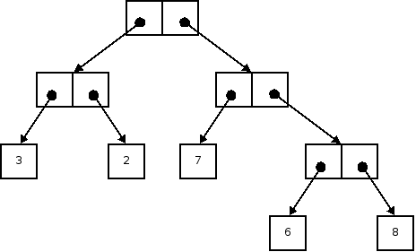
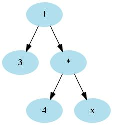

class Point(val x: Double, val y: Double) {
def move(dx: Double, dy: Double) = new Point(x + dx, y + dy)
def distanceFromOrigin = math.sqrt(x * x + y * y)
override def toString = "(" + x + ", " + y + ")"
}
val myFirstPoint = new Point(3, 4)
x, y, move, distanceFromOrigin, toStringoverride when overriding methods (here Object.toString)() for parameterless accessor methodsval parameter gives rise to instance variable and accessor
Point(val x, val y)
val gives rise to instance variable without accessor.
class Rand(gen: java.util.Random) { // No val
def value = gen.nextInt()
}class Rand {
private val gen = new java.util.Random(42)
def value = gen.nextInt()
}
class LabeledPoint(x: Double, y: Double, val label: String) extends Point(x, y)
object = class with only one instanceApp trait (similar to an interface) for an application object:
object Main extends App {
println("My first Scala App")
} static methods in Java. Examples:
List.tabulate Source.fromURL
math.ceil is not defined in an object—it's in the scala.math packagecase class ClassName(field1 : Type1, field2 : Type2, ...) extends Superclass
abstract class SimpleTree case class Leaf(value : Int) extends SimpleTree case class Node(left : SimpleTree, right : SimpleTree) extends SimpleTree
ClassName(arg1, arg2, ...)
Node(Node(Leaf(3), Leaf(2)), Node(Leaf(7), Node(Leaf(6), Leaf(8))))

selectorExpr match {
case pattern => expr
...
case pattern => expr
}
tree match {
case Node(l, r) => expr1
case Leaf(v) => expr2
}
l, r, v are bound to the values in the case class instances; you can use them in the expressions.
def sum(t : SimpleTree) : Int = t match {
case Node(l, r) => sum(l) + sum(r)
case Leaf(v) => v
}
case _
3 + 4 * x

class Expr case class Number(value : Int) extends Expr case class Variable(name : String) extends Expr case class Operator(left : Expr, right : Expr, f: (Int, Int) => Int) extends Expr
Operator(Number(3), Operator(Number(4), Variable("x"), _ * _), _ + _)
3 + 4 * x into Scala valueMap[String, Int]Map(key1 -> value1, key2 -> value2, ...) yields map with given key/value pairsmap + (key -> value) yields map with new key/value pairmap(key) yields value of key (must exist)map.get(key) yields Option, either Some(value)or Nonedef eval(expr : Expr, symbols : Map[String, Int]) : Int =
expr match {
case Number(num) => num
case Variable(name) => symbols(name)
case Operator(left, right, f) => f(eval(left, symbols), eval(right, symbols))
}
val result = sum(1, 7, 2, 9) val result2 = sum(3, 1, 4, 1, 5, 9, 2, 6)
Int*
def sum(args: Int*) = args.reduce(_ + _)
Seq[Int]Seq[Int], you cannot pass it directly.: _* ascription:
val s = sum(1 to 5: _*) // Consider 1 to 5 as an argument sequence
def recursiveSum(args: Int*) : Int = {
if (args.length == 0) 0
else args.head + recursiveSum(args.tail : _*)
}
lab7/report.txt inside the Git repo. Include the coder's name in the report! Add the classes Expr, Number, Variable, Operator to a Main.scala file, inside a Main object. Add the eval method to the Main object. In the body of the Main object, construct the tree
print it and and evaluate it with a symbol table in which x is 5. What is the code of your Main.scala file?
Now we want to process variable definitions (which we will write as val x = expr in the next lecture). For now, we will assume that they are already parsed into instances of
case class Definition(name : String, expr : Expr)
For example, a definition val x = 2 would be a Definition("x", Number(2)). A definition changes the symbol table. In a functional setting, that means we need to return a new table that contains all bindings in the old table and the new binding. For example,
val def1 = Definition("x", Number(2))
val def2 = Definition("y", Variable("x"))
val sym0 = Map[String, Int]()
val sym1 = eval(def1, sym0) // "x" -> 2
val sym2 = eval(def2, sym1) // "x" -> 2, "y" -> 2
System.out.println(sym2)
Implement this eval method. What is the code of your method? (You can get the fields of a definition as defi.name, defi.expr.)
Note: This eval method requires you to call the eval method that we defined for expressions, but it is a different method—it consumes a definition and a symbol table, yielding another symbol table.